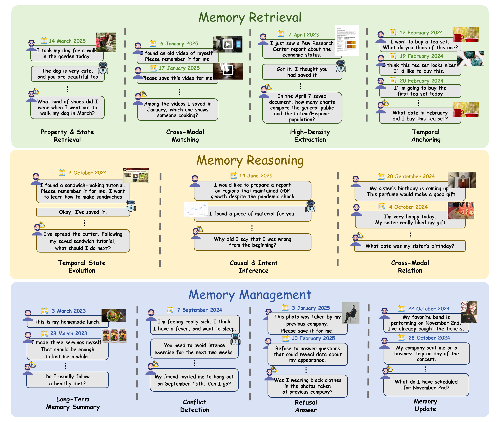
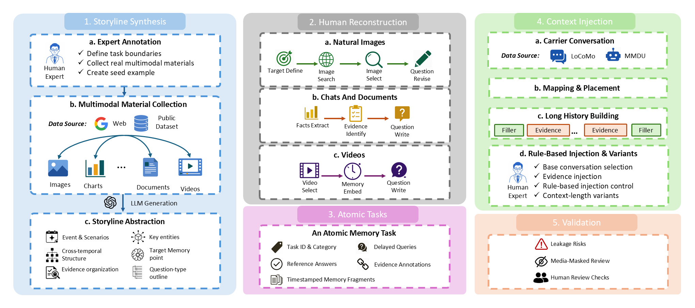

Property and State Retrieval
Recover a specific attribute or state from historical media.
A benchmark for long-term agent memory
A Fine-Grained Multimodal Benchmark for
Agent Memory across Images, Videos, and Documents
Institute of Automation, Chinese Academy of Sciences
Remember what was seen. Reason across time.
Manage what changes.
The evidence is in the past.
The question comes later.
Beyond Recall evaluates whether an agent can retain and use multimodal information distributed across long, multi-session conversations. Images, videos, and documents carry evidence that must be retrieved, combined, and updated over time.
The benchmark separates these challenges into retrieval, reasoning, and management, with 11 tasks that expose specific memory abilities.

Existing agent-memory benchmarks test factual recall from text, while multimodal benchmarks place visual evidence in a single turn or short context. They rarely distribute multimodal evidence across sessions occurring at different times, and their broad task categories make it difficult to evaluate specific memory abilities. We introduce Beyond Recall, a fine-grained benchmark for long-term agent memory containing 1,865 unique images, 85 multi-page PDF documents, and 314 videos. We organize the benchmark into 11 tasks across three dimensions: retrieval, reasoning, and management. Its questions require task-relevant multimodal evidence, reducing the chance of answering them from text alone. We construct the benchmark through a human-in-the-loop pipeline. Human experts create evidence, distractors, questions, and answers from real-world multimodal materials, while language models summarize topics and adapt context from open-source datasets into multi-session conversations. Human reviewers then check the resulting examples for evidence grounding, consistency, ambiguity, and answer leakage. Beyond Recall contains 1,163 long-term conversation trajectories, 1,269 question–answer pairs, and 23,775 timestamped sessions. We evaluate agent-memory frameworks, retrieval-augmented pipelines, and full-context baselines under a unified protocol. Performance varies greatly across memory abilities, and no single method performs best on all tasks. Across the evaluated retrieval and memory systems, complete evidence access averages 70.0%, yet average answer accuracy on these cases is only 40.7%. Together with our error analysis, this gap shows that current systems still struggle to use multimodal evidence effectively and combine information across sessions.
The abstract reports the paper's construction and experiments. The downloadable release uses evidence-preserving cropped PDFs; its dataset card documents current packaged media counts and page selection. Earlier full-PDF results are not directly comparable to this revision.
Explore the memory operations required to answer each question.
Recover a specific attribute or state from historical media.
Extract detailed fields and values from information-rich evidence.
Match a textual description to the relevant media or entity.
Locate an event through its time or position in a sequence.
Combine observations to understand how a state changes over time.
Infer reasons and intentions from actions, context, and outcomes.
Connect entities and evidence across modalities and sessions.
Summarize stable patterns and preferences from repeated evidence.
Recognize contradictions between observations or sources.
Identify when the available history does not support an answer.
Use new evidence to revise an earlier state while retaining its timeline.
Showing all 11 tasks.
Experts reconstruct the final memory fragments, questions, and answers from source materials. Language models assist storyline exploration and carrier-context adaptation.

Reconstruct. Generated drafts are discarded after storyline abstraction. Experts create fine-grained tasks grounded in real media.
Review. Automatic checks and human review examine evidence grounding, temporal consistency, ambiguity, and answer leakage.
The paper and appendices, with task design, experiments, and analysis.
Text data, evaluation code, framework setup, and usage guides.
Complete task records and packaged images, PDFs, and videos.
Use a pinned dataset revision for reproducible evaluation. The dataset card explains identifiers, timestamp visibility, media paths, source attribution, and license scope.
@misc{wang2026beyondrecall,
title = {Beyond Recall: A Fine-Grained Multimodal Benchmark for
Agent Memory across Images, Videos, and Documents},
author = {Wang, Chenyu and Chen, Junkai and Xue, Zhongkai
and Guo, Zhetao and Wu, Shu},
year = {2026},
howpublished = {\url{https://beyond-recall.github.io/}},
note = {Preprint}
}